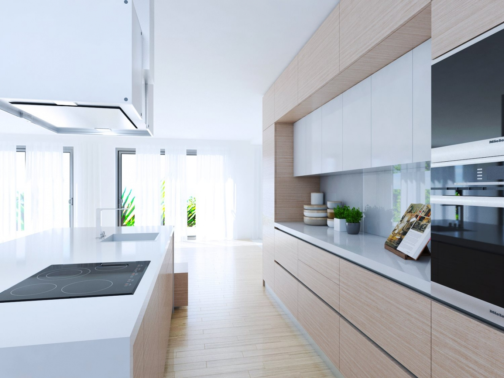
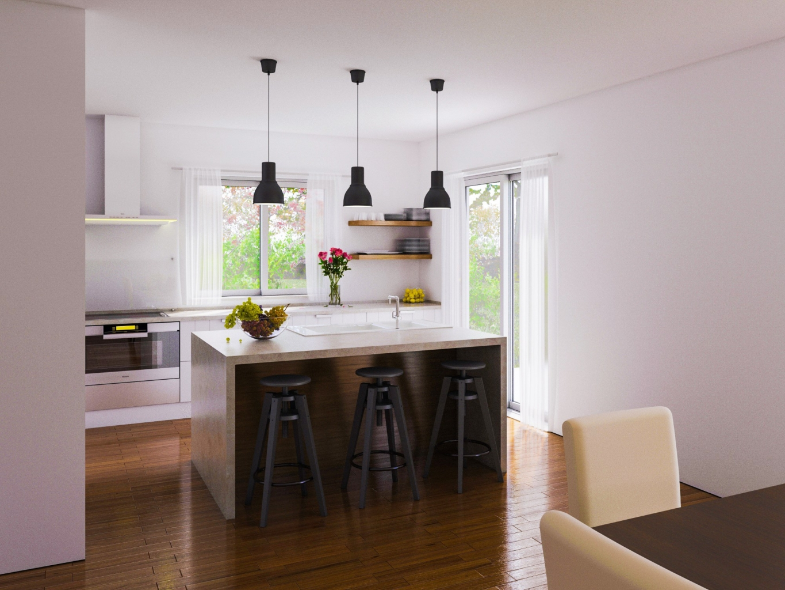

Stan Samobor
Raspored, kuhinja i namještaj po mjeri oblikovani su kao jedna mirna cjelina.
Stambeni prostori, vile, kuhinje i hospitality projekti razvijeni prema prostoru, načinu korištenja i stvarnim potrebama ljudi koji u njima borave.
Svaki projekt ima drukčiji opseg. Prije početka suradnje ponuda jasno navodi uključuje li koncept, tehničku razradu, namještaj po mjeri, proizvodnju ili koordinaciju izvedbe.
Raspored, kuhinja i namještaj po mjeri oblikovani su kao jedna mirna cjelina.

Projekt iz arhiva Galeković Designa, sačuvan kao dio kontinuiteta rada studija.

Arhitektura interijera i detalji namještaja razvijeni za karakter privatne vile.

Projekt kuhinje po mjeri iz postojećeg arhiva radova.

Projekt kuhinje po mjeri iz postojećeg arhiva radova.

Lokalni karakter prenesen je u sobe, zajedničke prostore i detalje prilagođene svakodnevnom ritmu hotela.
Prikazani projekti ne znače da svaki budući angažman uključuje isti opseg usluge. Točan opseg, isporuke, odgovornosti, rok i naknada definiraju se individualnom ponudom.